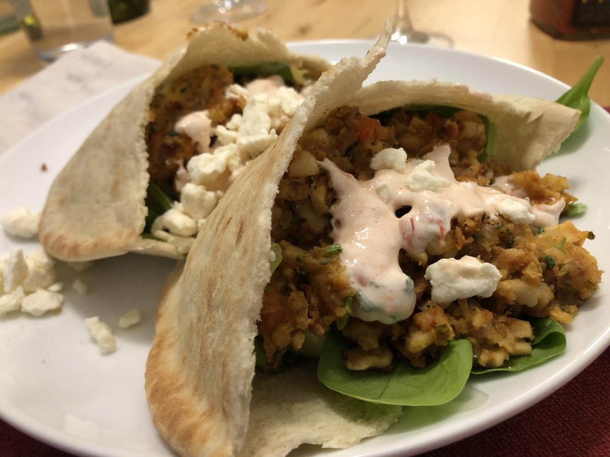

Based on https://www.washingtonpost.com/recipes/falafel-pitas-cilantro-cashew-sauce/17090/?utm_campaign=plant_powered_week_7&utm_medium=Email&utm_source=Newsletter&wpisrc=nl_vplantpowered_w7&wpmm=1
Personal rating: 3 / 5

See note at bottom for alternative yogurt-based sauce instead of cashew-based
1 cup (5 oz) raw, unsalted cashews, soaked (10-12 hours!)
1/2 bunch fresh cilantro leaves (1 cup packed)
1/2 cup water, or more as needed
1/4 cup fresh lemon juice (from 1 large lemon)
1/2 tsp kosher salt
1/8 tsp ground cayenne pepper
Can of chickpeas, mashed with potato masher
2 medium cloves garlic
1/4 medium red onion, finely chopped (about 1/4 cup)
1/2 small carrot, scrubbed well and finely chopped (about 1/4 cup)
1 Tbsp cilantro stems, finely chopped
1/3 cup loosely packed parsley leaves
1.5 tsp ground cumin
1 tsp kosher salt
olive oil
4 pita bread rounds, each cut in half
1/2 English (seedless) cucumber, thinly sliced into rounds
1/2 cup thinly sliced red onion
1 cup (2 oz) baby spinach
1 cup cherry tomatoes, chopped
Mild harissa (store-bought; optional)
Stuff each of the pita halves with 3 falafel, cucumber slices, red onion, spinach and tomatoes
Dollop with enough cilantro-cashew sauce to cover the filling, and some harissa, if using